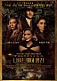

킹메이커 충분히 예상가능한 결말임에도 소름끼쳤다 세상에서 제일 무서운게 알면서 당하는 건데... 나의 미래는 나의 행동에 기인 한다.

스파이더맨: 노 웨이 홈 삼십 대의 내가 십 대, 이십 대의 나를 만났다 스파이더맨 1 부터 본 사람이면 재미없을 수가 없다 전 스파이더맨 두명이 자책했던 일들이 여기서 어느정도 구원받았다는거에 감사드립니다
더 배트맨 MCU나 DCEU 같은 분위기를 기대하는 사람이면 그냥 가지마라. 그런 영화 아니니까. 코믹스 기반 영화의 탈을 썼을뿐 내용은 형사와 사립탐정이 연쇄 살인마를 쫓으며 도시의 부패를 발견하는 범죄스릴러-느와르 영화다. 오히려 영화에 관심 많은데 평소에 히어로물에 반감을 가진 사람들이 그런 반감을 씻어내기 좋은 영화에 가깝다. 전작 배트맨 영화들과 다른 장르 느낌 화려함 느와르 한편 본거 같음 난 다크나이트 다음으로 이영화 뽑을듯 원래 dc가 detective comics의 준말임.
안테벨룸 좋은 반전과 구조, 근데 너무 노골적인 가르침 꼭 아무 정보 없이 관람하세요 혐오는 어디에도 없고 어디에나 있다.보이지 않는다고 해서 존재하지 않는 건 아니다